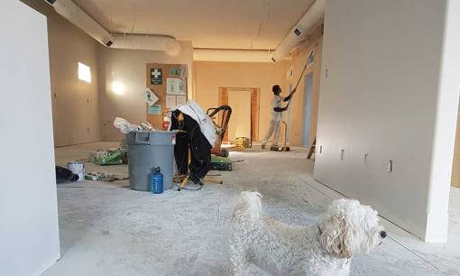
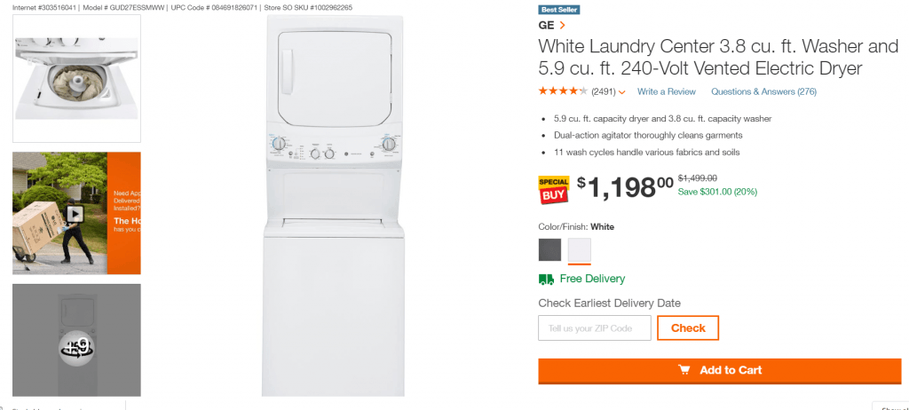
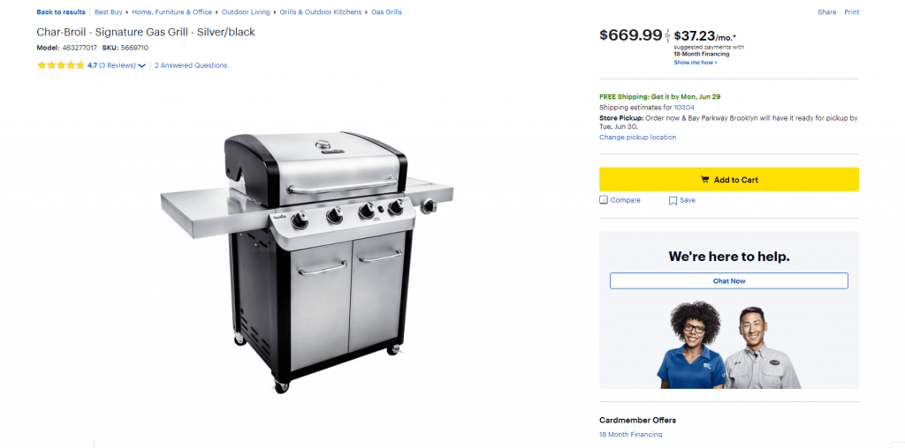
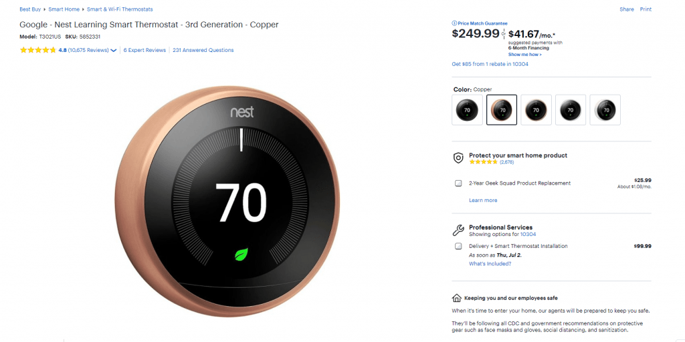
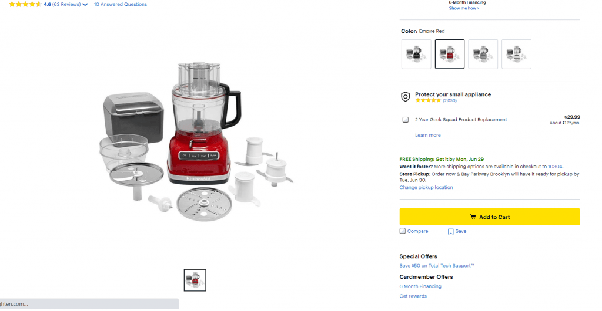
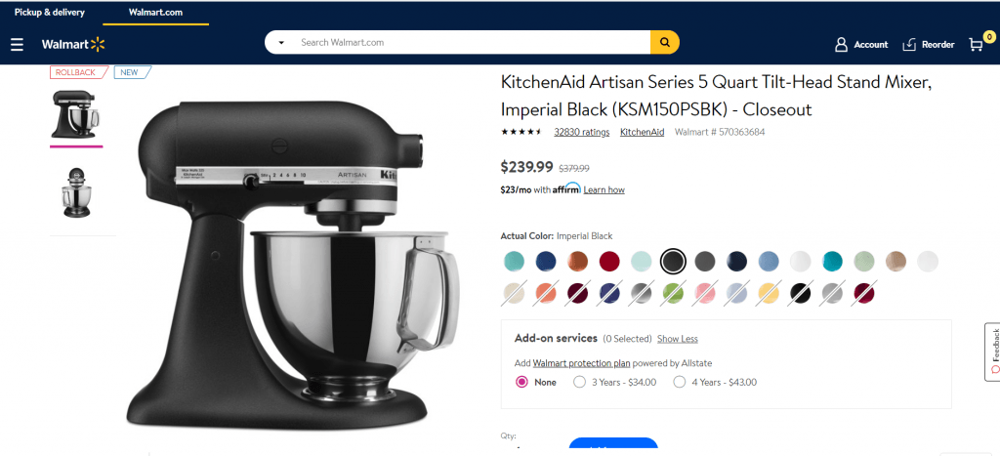

- Главная /
- Недвижимость /
- Техника для дома: как американцы обустраивают свой быт
Техника для дома: как американцы обустраивают свой быт
Американцы избалованы бытовой техникой. При продаже и аренде квартиры или дома
укомплектована кухня: холодильник, плита (газовая или электрическая), микроволновая печь,
посудомоечная машина. По мере обустройства дома хозяева обрастают всевозможными благами
бытовой техники.
«ProImmigrationHouse» решила выяснить, как американцы налаживают быт и какой техникой пользуются.
«ProImmigrationHouse» решила выяснить, как американцы налаживают быт и какой техникой пользуются.

Стиральная и сушильная машины
Чаще это две отдельные машины. В США никто не сушит и не досушивает белье на веревках и
специальных «сушилках» и нет понятия «дополнительной сушки белья». Поэтому стирают белье в
стиральной машине, затем перекладывают в сушильную, после которой белье отправляется на
глажку или сразу в шкаф.
Комбо «Стиральная и сушильная машина» обойдутся в $1000 и больше. Например, в сети гипермаркетов «Best Buy» такое комбо марки «Samsung» обойдется в $1,100.
Комбо «Стиральная и сушильная машина» обойдутся в $1000 и больше. Например, в сети гипермаркетов «Best Buy» такое комбо марки «Samsung» обойдется в $1,100.

Laundry Center американской марки GE («General Electric»), которые прочно прижились в
американских семьях. Снизу – стиральная машина, сверху – сушильная. Цены начинаются также от
$1000 и выше.
По сравнению с азиатским и европейским рынками, американские машины для стирки и сушки белья – более мощные в энергопотреблении и долговечные. Срок службы составляет до нескольких десятков лет.
По сравнению с азиатским и европейским рынками, американские машины для стирки и сушки белья – более мощные в энергопотреблении и долговечные. Срок службы составляет до нескольких десятков лет.
Пылесосы
Их многообразие в США зашкаливает: роботы-пылесосы, моющие электрические швабры, вакуумные,
на батарейках, с управлением через телефон и прочие. Американцы любят всё, что облегчает им
жизнь. Цены начинаются от $50 и выше.

Гриль
Это одна из составляющих американской мечты с домом, зеленым газоном и грилем на заднем
дворе. Грилей великое множество: от кухонных «грилей-вафельниц-сэндвичниц» до полноценного
приспособления для приготовления барбекю. Американцы любят пищу, приготовленную на гриле:
овощи, рыбу, мясо, когда не нужно добавлять масло и излишнее количество приправ.
Домашние (кухонные) грили стоят от $45 и выше. Уличные – от $150. Более габаритный газовый гриль обойдется в $250 и выше.
Домашние (кухонные) грили стоят от $45 и выше. Уличные – от $150. Более габаритный газовый гриль обойдется в $250 и выше.

Системы «Умный дом»
ПО для управления бытовой техникой, камерами видеонаблюдения и пр. Широко распространен –
термостат, позволяющий запрограммировать изменение температуры в помещении. Например, чтобы
к приходу домой температура в помещении опускалась до 18 градусов или когда термостат сам
регулирует температуру в доме в дневные и ночные часы.
Важный плюс – такие термостаты поддерживают разную температуру в комнатах, угождая даже самым требовательным жильцам.
Цена термостатов стартует от $99.
Важный плюс – такие термостаты поддерживают разную температуру в комнатах, угождая даже самым требовательным жильцам.
Цена термостатов стартует от $99.
Кофе-машина
Кофе – любимый напиток американцев. Кто-то перед работой забегает в любимую кофейню, а
кто-то наслаждается кофе, приготовленным дома. Именно поэтому так популярны кофе-машины. В
Штатах зачастую отдают предпочтения кофе и капсульной кофемашине марок «Nespresso» или
«Keurig».
Цены на кофемашины начинаются от $80. Если достаточно приготовить классический эспрессо, можно купить самый бюджетный вариант. Любителям капучино или латте можно приобрести девайс подороже.
Цены на кофемашины начинаются от $80. Если достаточно приготовить классический эспрессо, можно купить самый бюджетный вариант. Любителям капучино или латте можно приобрести девайс подороже.

Фуд-процессоры
В России такие устройства чаще называют кухонными комбайнами – предназначены для
измельчения, нарезки, терки, взбивания, смешивания продуктов. Как правило в комплект входят
насадки для изготовления фарша, венчики для миксера, насадка для блендера, разные виды
тёрок. Для семей, которые готовят дома, это незаменимый в хозяйстве предмет.
Цена фуд-процессора определяется функциональностью, но минимальный набор можно купить за $35-50.
Цена фуд-процессора определяется функциональностью, но минимальный набор можно купить за $35-50.

KitchenAid stand mixer
Самый "американский" предмет быта. Минимально – это миксер, но к нему можно добавить десятки
насадок: для лапши, замешивания теста, фигурной нарезки, мяса. Бытовая техника KitchenAid
прославилась тем, что служит десятилетиями, ее передают по наследству, а дизайн не теряет
актуальности с 1919 года. Стоимость начинается от $200.
Говоря о бытовой технике в США:
- У американцев нет предпочтений относительно торговых марок. В США бытовую технику покупают, основываясь на функциональности, практичности, надёжности и отзывах потребителей.
- Техника на американском рынке, даже если это европейские или азиатские производители, надёжная и высокого качества, заметно отличается рубленным, угловатым и агрессивным дизайном. Например, газовые плита в США и в России ничем не отличаются, однако в США они больших габаритов и грубее внешне.
- Американцы следят за экологией, поэтому меняют бытовую технику только в исключительных случаях – когда та вышла из строя, то есть редко.
- Крупные ритейлеры бытовой техники в США – BestBuy , Amazon , Walmart , Costco , Home Depot .
- Американцы экономят на технике, покупая её едва ли не в полцены: в периоды тотальных распродаж. Например, ко Дню Благодарения, Рождеству, Дню Памяти или Дню Трудящихся. В эти даты предложения с большими скидками (до 50% и даже больше). Кроме того, торговые сети периодически делают скидки на ассортимент.
«ProImmigrationHouse» рекомендует:
подходить к покупке американской бытовой техники прагматично – с точки зрения
цены/функциональности и качества.
Еще один совет – читать отзывы. В США распространено делиться своим опытом – выкладывать фото, делиться впечатлениями и даже давать негативные отзывы. Представленная в сети информация будет полезна перед покупкой.
Еще один совет – читать отзывы. В США распространено делиться своим опытом – выкладывать фото, делиться впечатлениями и даже давать негативные отзывы. Представленная в сети информация будет полезна перед покупкой.